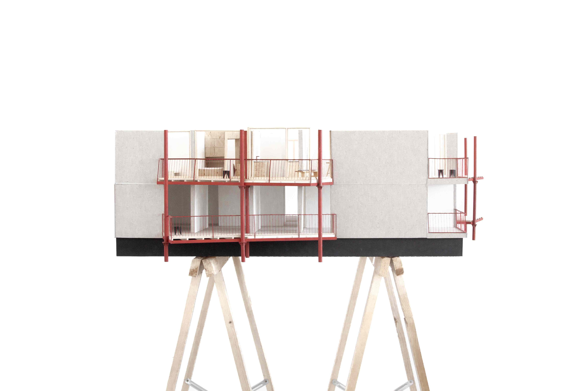
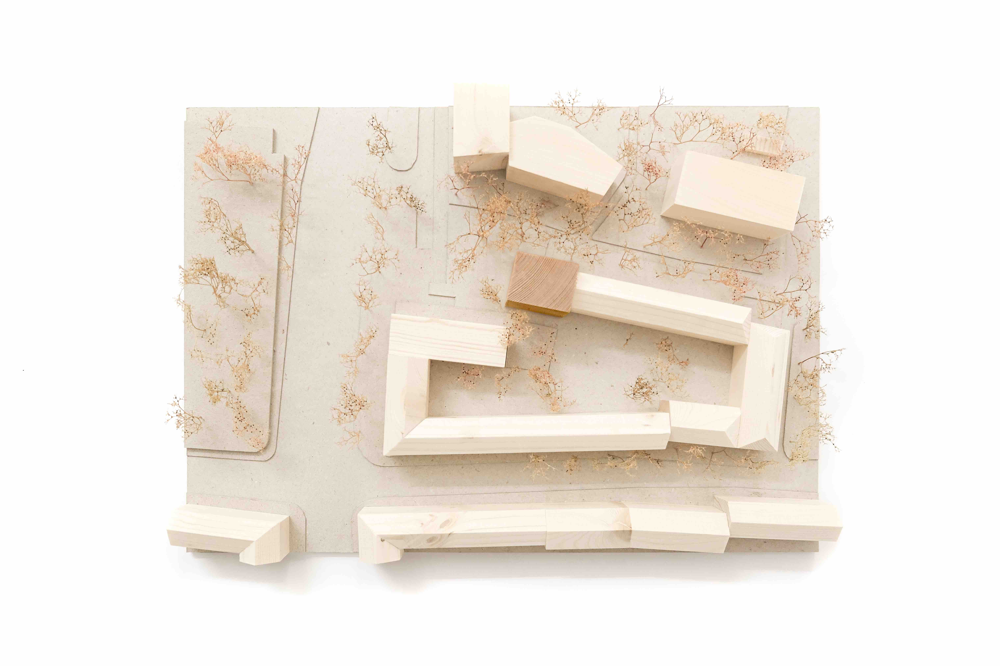
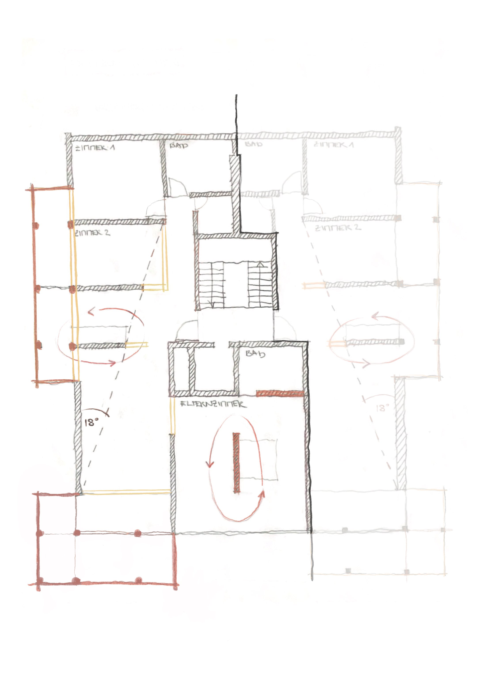
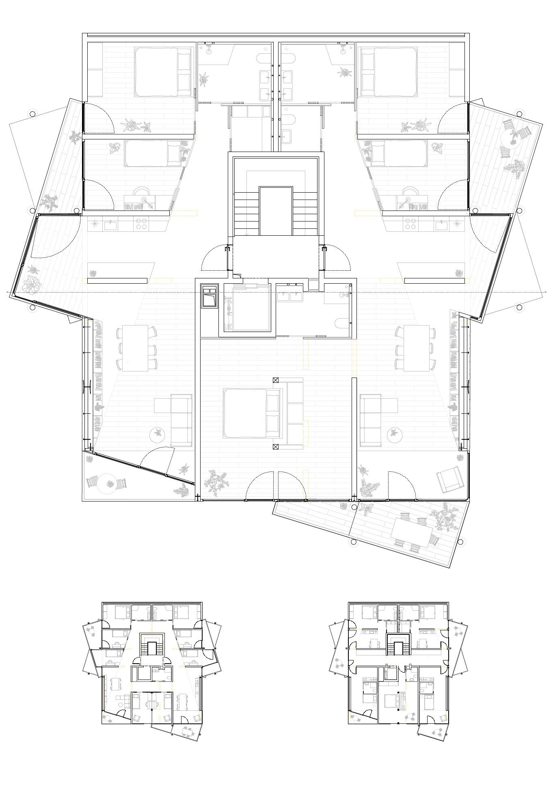
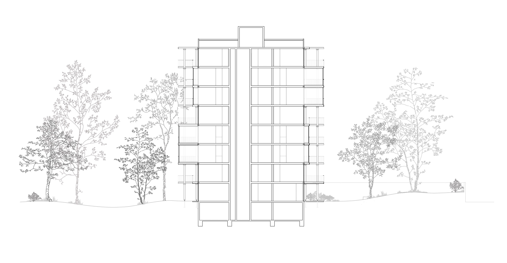

The project investigates how existing residential buildings can be adapted to contemporary living conditions through minimal architectural intervention. Focusing on a typical post-war housing structure in Munich, it addresses the widespread challenge of aging building stock that is often considered for demolition rather than transformation.
Instead of replacing the existing structure, the design proposes a strategy of selective modification. By working within the given structural framework, the project explores how spatial quality can be improved while preserving the material and structural logic of the building.
The concept of "Inside Out" is expressed through the reorganization of spatial relationships. Targeted removals of non-load-bearing elements open up the interior, while new connections between circulation, facade, and outdoor space create a more porous and flexible spatial system.
A key intervention is the addition of lightweight, self-supporting balcony structures. Constructed from timber and steel, these elements extend the living space outward and establish a stronger relationship between interior and exterior. Their form adapts to the surrounding context, enhancing both environmental quality and spatial experience.
The project introduces a range of housing typologies, from compact units to shared living arrangements, responding to contemporary social and demographic needs. At ground level, the integration of a kindergarten redefines the building's relationship to the neighborhood, activating the existing structure as part of a broader social infrastructure.
Rather than imposing a new architectural identity, the project demonstrates how minimal interventions can unlock the latent potential of existing buildings — offering an alternative to demolition through transformation.


